Archives : 2007-02
不同人生 @ Feb 27, 2007
看电视中对某人的访谈节目，巧的是10多年前曾与她在一起一段时间，当时关系不错，分开时各自留下联系方式。媒体推出她的时候，我一直怀疑是我认识的这个人，昨天看到对她的访谈，越来越确定了自己的猜测，今天找出10多年前的通讯本，里面霍然写着一切一切与之有关、与记忆相符的信息，没错，就是她。想她一定记不起来我的名字，或许也象我一样模糊认得对方的面孔，天呐，青春期的我脸比现在要胖呢...她倒没什么太大变化。
访谈中的她和过去差不多性格，少数民族总显得热情奔放一些，小时侯她就很放得开。10多年过去了，以前的朋友中小不经意居然也出了三五个明星咯。相对于我现在的选择，或许他们当时继续走的道路是对的......
有人说：“出位的未必出色”。您认为呢？
无题 @ Feb 26, 2007
春节长假，一些与这城市气质不同的人出现其中，回家过年或走亲访友的，不同的人带来不同感受，仿如旅行中不同的风景。
第一天上班，办公桌上的植物疯长出好些新叶子，茁壮的摸样，很让人欢喜。想到陈坤谈到他在东方歌舞团那段日子真正是怀着“满心欢喜心”，那种心情于此时此刻有些奢望......
假期中花了一个下午收拾书房，越收拾越感觉象在收拾丢失的某些无以言状的东西。有人说搞文艺的喜用“东西”两个字，后来电视节目里的艺人措辞的确巧合了这个说法，除了“东西”，还喜欢说“感觉”。书房的窗台上堆积了平时购买的杂志，这两年购买杂志的频率明显高于购买散文小说，《旅行家》几乎排满整个隔段，还有《收获》、《ELLE》及《时尚》，零星夹杂着其他的杂志。费劲地按照书名归纳这些书籍时，想到有人疯狂下载BT的好处，省了摆放空间、体力和金钱，还享受了同样内容。如果这些杂志BT每期都有下载的话，您会选择哪种方式？下载？还是购买实物？
破五.迎财神 @ Feb 23, 2007
破五之“崩溃香火”
赶在中午12点前到栖霞寺，眼前的情景比往年都要膨胀，人们的香火把寺前的空地装饰得异常宏大。连续三年到这座寺庙里烧香，这年却不想拥挤在杂乱无章的人群中点燃所谓的高香，望着好象被洗劫后的场面仿佛上演着滑稽戏，鞭炮声不绝于耳，烛火渐渐变成火堆簇拥着燃烧，即使虔诚120%的心我想也会受到周遭影响，当时惟有一声叹息和无奈。
人们寄托欲望抒发欲望，有谁守得住自我？忽然一个置身世外的孩子与这崩溃的场景形成鲜明的对比，在不再掩饰欲望的社会中是否需要保有一份天真才能活得自由而自如？
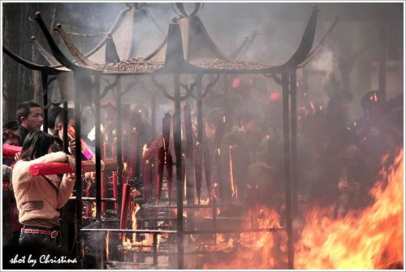


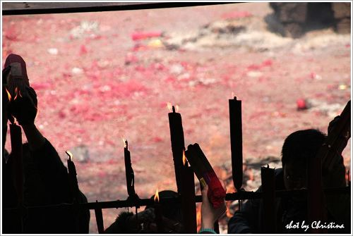
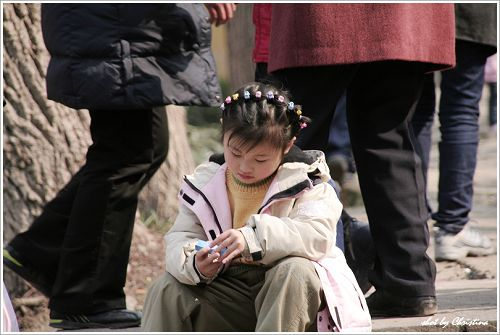


破五之“玄武湖.宁静的夜”
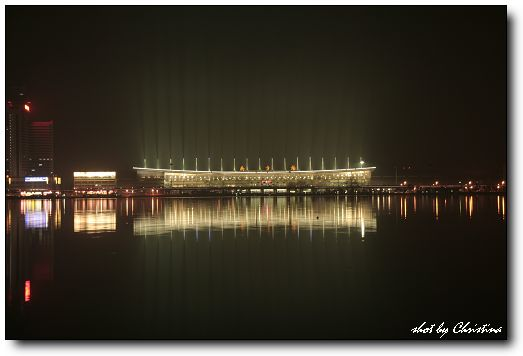

破五之“wo”
假期过去大半，混混沌沌的每日睡懒觉看电视，昼伏夜出，完全背离生理习惯，且越夜越精神。想来是夜晚的安静吧？！下一个长假还这么过那我真不能原谅自己，不过这样倒是省了很多银子。混沌中心里却安静的很~
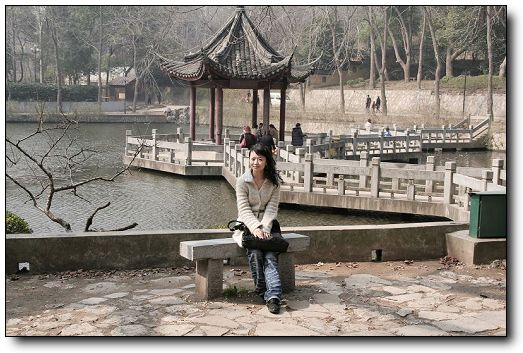
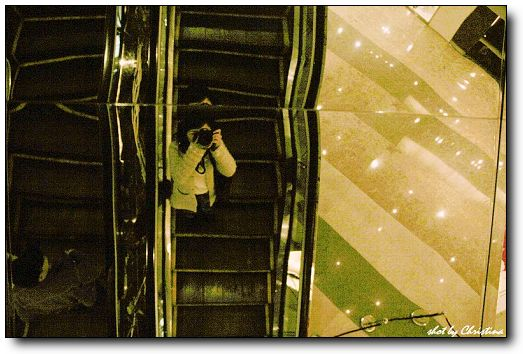
年夜饭:) @ Feb 17, 2007
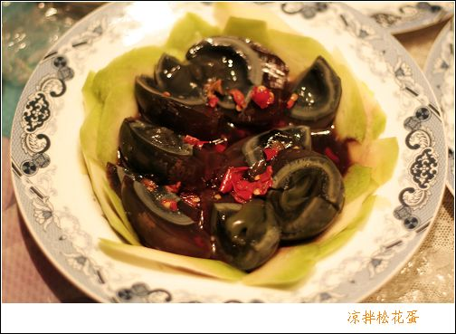
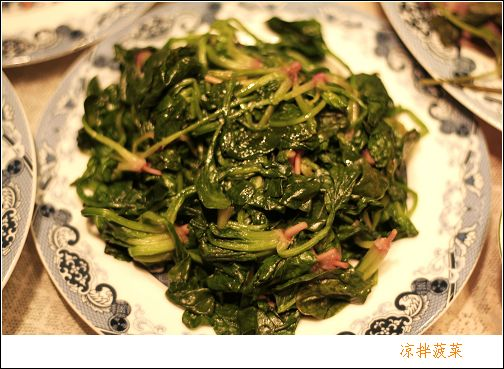


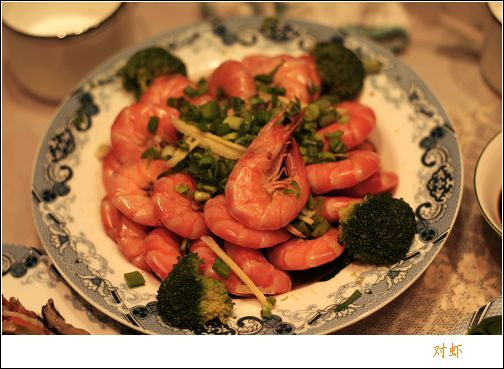


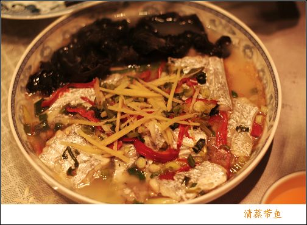
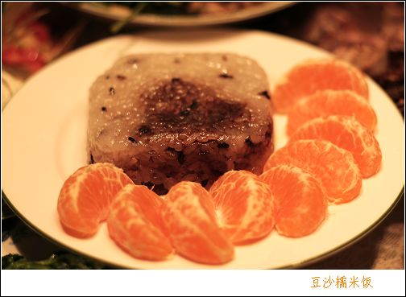


期待《300》 @ Feb 15, 2007
07年3月9日这部由《Sin City》作者Frank Miller创作的漫画小说改编的电影《300》将上映，看过预告片之后特别期待！一定要等着看好版本！这部电影讲述发生在四百八十年前希腊的斯巴达人与波斯人斗争的传奇历史。与《Sin City》这部电影一样，《300》的制作主要在室内完成，然后通过后期的特技，整合出虚拟的历史背景。
情人节.夜 @ Feb 15, 2007
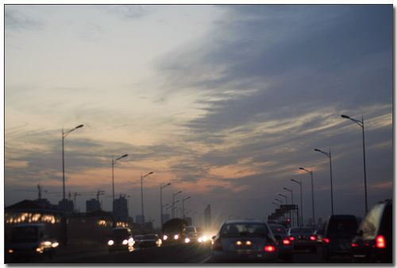
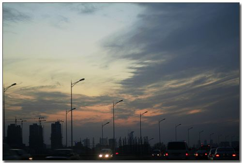
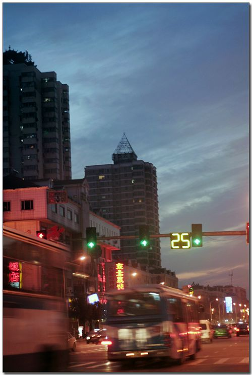
情人节.国际消费节 @ Feb 14, 2007
收拾完三箱样品，浑身是汗，累坏了。
听好些人不约而同的用“精干干”形容过我，刚在走廊遇见的同事才说了这个词。其实我懈了哐啷，还驼着个背走路，身体缺陷是可以隐藏的，就好象今儿早晨窗外阳光给人温暖的错觉，出门才知道衣服穿少了。
上天挺厚道，连下几天雨，情人节这天放晴。不太喜欢情人节，一年中更喜欢过生日、纪念日。只属于自己的特别日子，情人节几乎就是全球消费节，人云亦云的方式内容让人腻得慌，毫无意外惊喜与感动。相信今晚即使平时人烟稀少的餐厅也会跟着貌似快乐的人们火爆一把。偶惦记着那些新出来的DVD，指望每晚满足过五官神经然后心满意足地入眠。《血钻石》、《麦迪逊》之后准备在今天晚上感受一下《德州电锯杀人狂-前传》的刺激。巩俐新作《沉默羔羊前传》北美是否上映？到这里估计要三个月才能出D9版本的DVD，期盼ing~~
自购新香水一瓶，只关心芬芳，不懂品牌。
品牌名称：Roberto Cavalli
创建地：意大利

冷调鼓楼 @ Feb 12, 2007
夜里忘记关窗户，难得感冒的我终于患了重感冒。想来有点窝囊。
曾经许诺去拍鼓楼的黄昏，周末特地在17点左右赶到鼓楼，黄昏的太阳不知在什么地方，设想中的构图无法如愿。周末这组照片的色彩不大喜欢，自己未能沉浸下去做这件事，想想很多事情皆如此，一个人做自己喜欢的事，不被打搅，不去打搅。
偶有冷漠情绪，想到“冷眼看人生”五个字，如冷调的周末。尚未看穿全局，片段中的线条却已勾勒出图象。接受现实倒是容易快乐些。
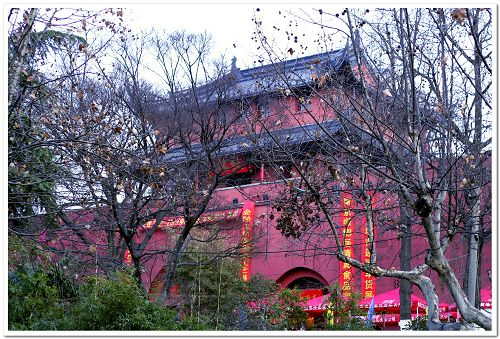
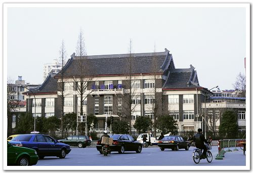
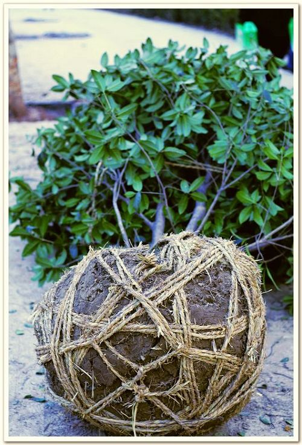
无题 @ Feb 07, 2007
我还不够叛逆。
扯淡 @ Feb 07, 2007
女人被歧视得究其自身原因，我从小喜与男生打交道不无道理。受不了猪脑，更受不了脂粉糜俗，谈一化妆品能谈出十个所以然来。职业妇女中少有成绩，工作做的漂亮的，被人闲话也不会少。这闲话也是猪脑抖落出来自己却沉浸在混沌中的一类。工作无高低贵贱之分，对小事能尽心尽责会赢得尊敬。份内事不负责，唧唧歪歪，整个儿唬弄过去了事。不参与以为经验丰富、勤奋负责，了解后就两字儿概括“扯淡”！
前阵子题图上有句话：尴尬是一种可贵的能力。
脑子不够使不是问题，不做份内事还理直气壮闲话一箩筐，没有一丝尴尬，不知可以用什么来形容，男人若此...更鄙视。仔细想想，某些寡言薄语条理清楚不大废话的才是智慧之人。

新鲜饱满的怫手在办公室放了两周成了脱水蔬菜，人亦如此。
2006年度工作总结会 @ Feb 06, 2007
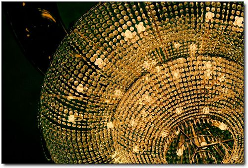
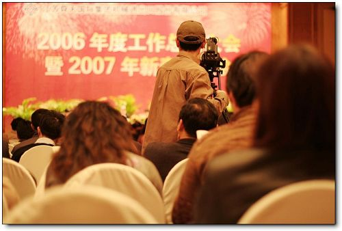
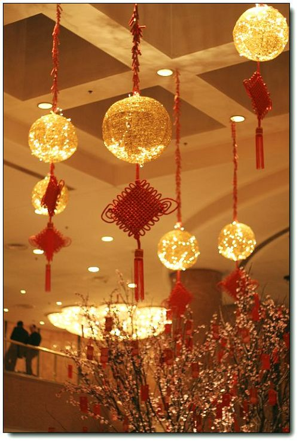
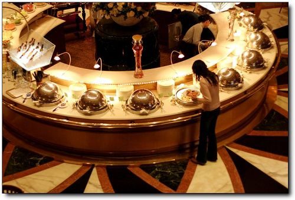
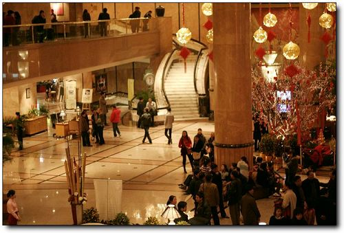
同事都上杂志啦@_@
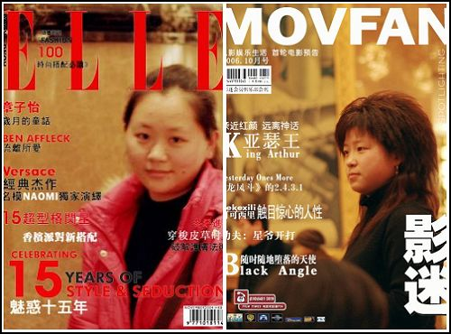
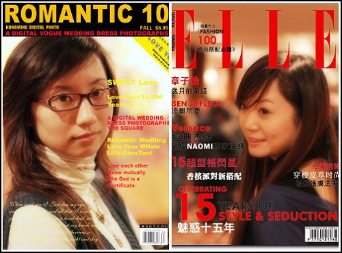
麦当劳叔叔 @ Feb 06, 2007
麦当劳叔叔晒着初春的太阳，真幸福。
可偶觉得刺眼咯~即使拍照也坚持不了几秒。
麦当劳的汉堡越来越缩水，体态好似减肥过后，JS~
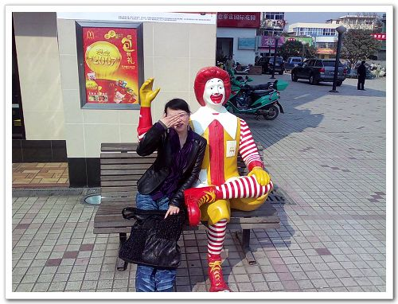
立春 @ Feb 05, 2007
周末，立春。
烧菜的油溅到脸上，脑门上留下一个小小的褐色痕迹。
公司年会上拿安慰奖400元苏果券。06年公司净利润1亿多人民币，员工也从三四年前的300多人增加到500人左右。
为了图省事，想跟团旅行，结果上海南京去欧洲的名额一个月前就满了，日本除了除夕夜还剩一个名额外也满了，这世道热爱生活的人还真多。计划往后推吧。
money原则 @ Feb 04, 2007
有人在money上总是很有原则。
偶也想有原则，但拉不下这个脸。
古语好：廉者不受嗟来之食。
无论如何...无法每每气定神闲地候着对方付money。
没有原则，就得接受不平等交往。
难道凭的是偶的热情？
偶不敢深究这之下的种种因素...